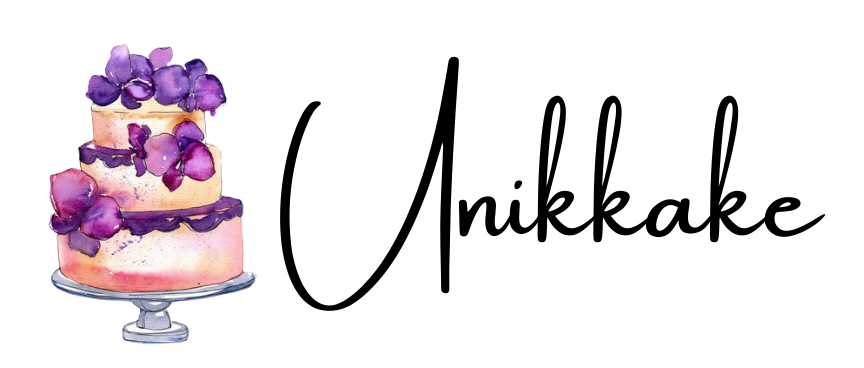
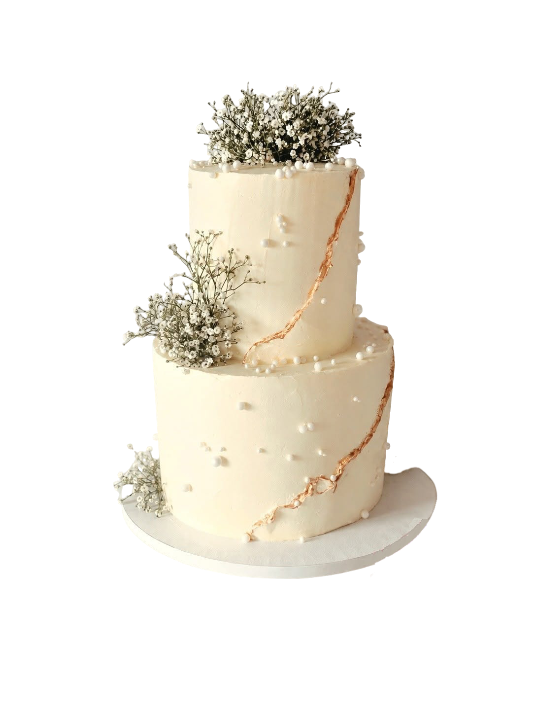
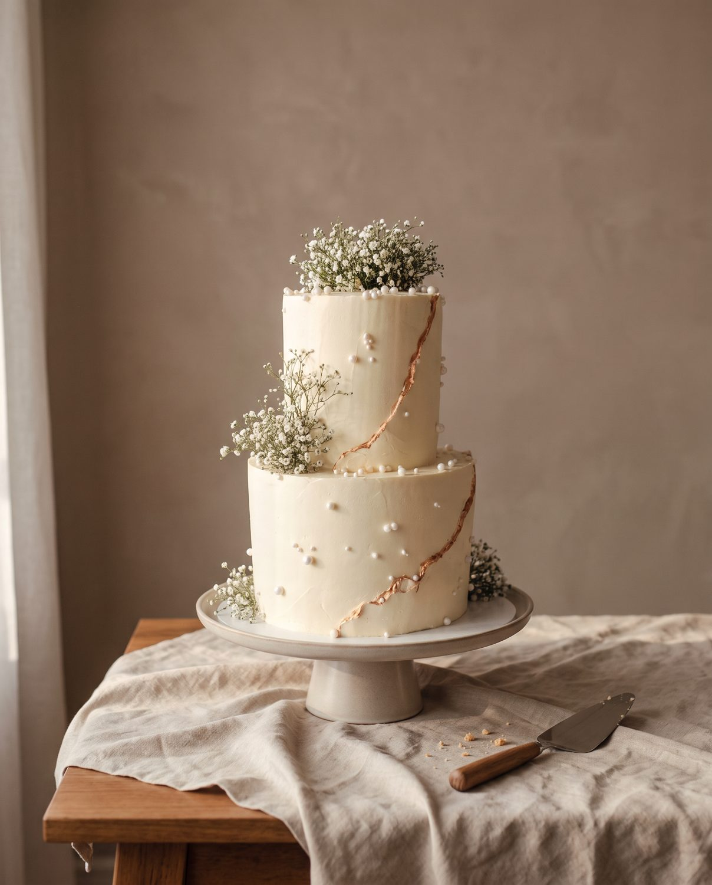
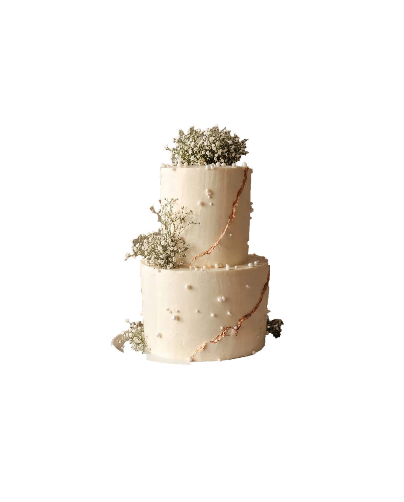

ADagens idé, ryddet – hele kaken + én linjeBryllupKaker for 25–90 gjester, smak i hver etasje uten tillegg
13 smakerFra sjokolade og sitrus til Aperol spritz
Fra 1 450 krAlle priser inkl. mva
BestillSend dato, antall og et bilde – skjema →
unik(adj.) som det bare finnes én av
Håndlagde bryllupskaker og temakaker fra Karmøy. Hver kake lages fra bunnen for akkurat din dag.
Bestill kake →

Håndlagde bryllupskaker og temakaker fra Karmøy.
Bestill kake →unik(adj.) som det bare finnes én av
ITrapp – ord i hjørnene, tekst i tomrommet